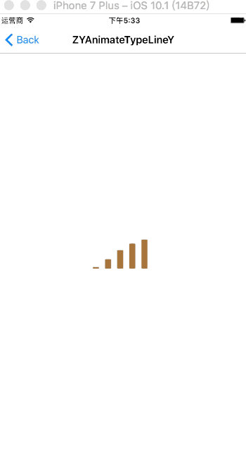
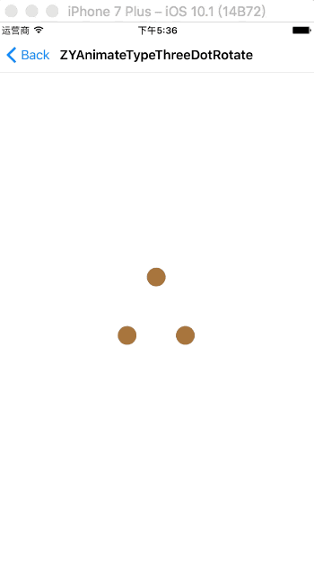
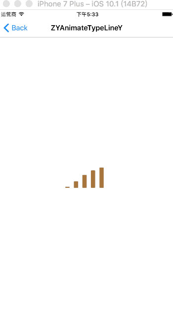
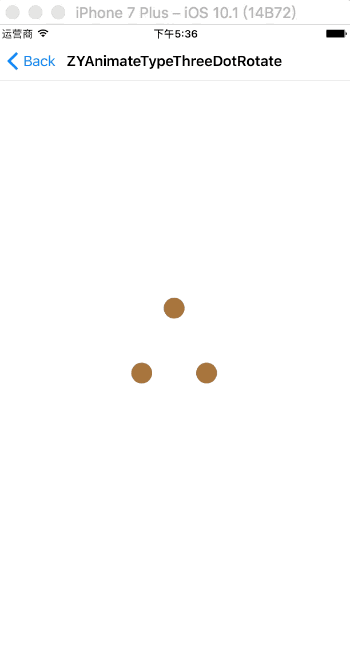

我写的一些demo与库记录
- modal转场动画
- 过山车刷新动画
- 15种加载视图集 持续添加
- 仿淘宝购物订单逻辑
- 加速开发之用点来写UI：链式封装的UI工具集，使用方法类似Masonry与SDAutolayout
- 封装好的带逐个弹出逐个掉落动画的自定义分享面板 可自定义平台 字体颜色 点击可分享 适合常用的分享场合 使用前请替换各平台的AppKey和AppSecret
- 更多实例请移步我的github
部分效果


主要是重写UINavigationControllerDelegate:
func navigationController(_ navigationController: UINavigationController, animationControllerFor
operation: UINavigationControllerOperation, from fromVC: UIViewController, to
toVC: UIViewController) -> UIViewControllerAnimatedTransitioning? {
}
在UIViewControllerAnimatedTransitioning中添加自定义的效果:
// MARK: - UIViewControllerAnimatedTransitioning
public func transitionDuration(using transitionContext: UIViewControllerContextTransitioning?) -> TimeInterval{
return 1.0
}
func animateTransition(using transitionContext: UIViewControllerContextTransitioning) {
self.transitionContext = transitionContext
if self.isPush!{
self.pushAnimation()
}else{
self.popAnimation()
}
}
部分效果
 



使用方法
1.手动拉入AnimatedLoaders文件夹
2.cocoapods: pod 'ZYAnimatedLoader', '~> 0.0.4'
ZYAnimator *animator = [[ZYAnimator alloc] initAnimateWithType:ZYAnimateTypeLineCenterY tintColor:[UIColor redColor]];
animator.frame = CGRectMake(0, 0, 100, 100);
[animator startAnimation];
[self.view addSubview:animator];
加速开发之用点来写UI：链式封装的UI工具集，使用方法类似Masonry与SDAutolayout
部分效果
使用方法
ZYLabel *label = [ZYLabel createZYLabel:^(ZYLabel *label) {
label.frameBlock(CGRectMake(100, 200, 100, 30))
.textColorBlock([UIColor blackColor])
.fontBlock([UIFont systemFontOfSize:14])
.backGroundColorBlock([UIColor brownColor])
.textAlignmentBlock(NSTextAlignmentCenter)
.textBlock(@"this is a text")
.userEnableBlock(YES);
}];
label.singalTapBlock = ^(){
NSLog(@"singalTap");
};
label.doubleTapBlock = ^(){
NSLog(@"doubleTap");
};
label.center = self.view.center;
[self.view addSubview:label];
部分效果
如何使用
/**显示分享面板
@param 分享平台名称
@param 分享平台图片
@param 文字颜色
@param 文字字体
*/
[[CzyPopView shareManager] showSharePanelWithTitiles:self.titles
andImageNames:self.titles
andTextColor:[UIColor redColor]
andTextFont:[UIFont systemFontOfSize:12]];
部分效果
部分效果